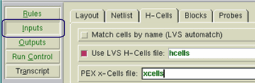

This procedure
assumes you have an SVRF file set up for your type of parasitic
extraction and only specifies the settings particular to producing
hierarchical netlists.
Prerequisites
A
valid PEX rule file for this layout. If you are creating a DSPF netlist
for use in a hierarchical simulator that accepts a position file,
add PEX Netlist Position File.
Hcell
file or Hcell statement
that includes all cells also listed in the xcell file.
Xcell
file listing cells to preserve in the parasitic netlist.
Layout
database that is LVS-clean.
For more information refer
to “Prerequisites for Performing Parasitic Extraction”.
Procedure
- Start the PEX interface in
Calibre Interactive:
- Load a runset or rulefile.
- Specify the hcells, xcells,
and extraction type.
- Click the Inputs button in the left pane.
Select the H-Cells tab. Specify
the hcell and xcell files in the appropriate fields. (They can be
the same file.)
Figure 1. Inputs Pane
for Hierarchical Extraction 
- Click the Outputs button in the left pane.
Set Extraction Mode to xRC.
Figure 2. Set Extraction Mode
- In the area above the tabs,
set Extraction Type to Hierarchical
Figure 3. Outputs Pane
for Hierarchical Extraction.
- Set other controls as needed.
When ready, click the Run PEX button
in the left pane.
Results
Check the Transcripts pane to verify
the run completed with no errors. If you have selected “View netlist
after PEX finishes” in the Outputs pane, a text viewer appears with
the generated netlist loaded.